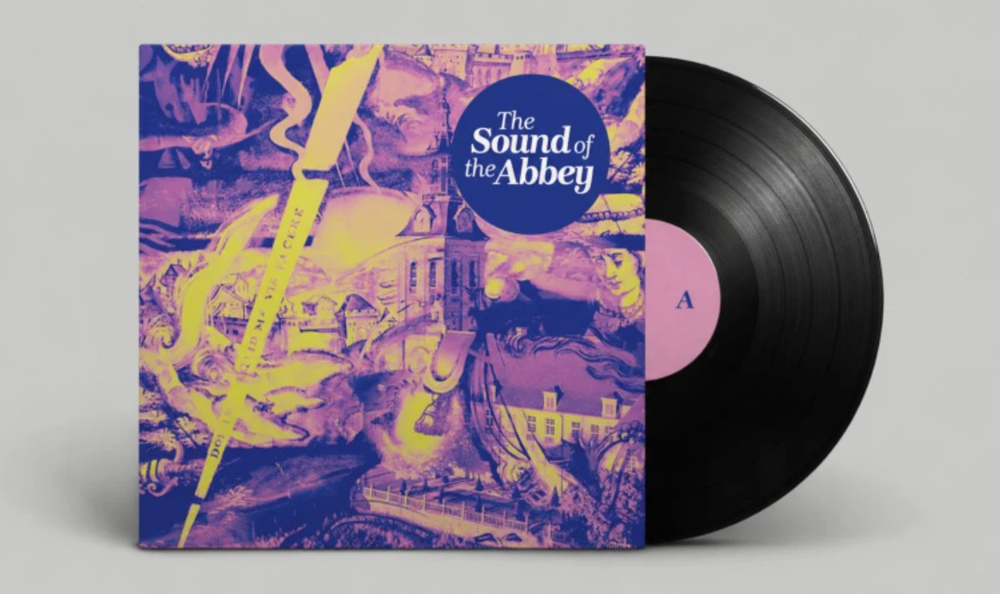

Cd en vinyl
The Sound of the Abbey
De abdij klinkt
Abdij van Park, een oase van rust vlak bij Leuven, draagt negenhonderd jaar geschiedenis mee. Haar bibliotheken, koor, pandgang, refter en abtskwartier hebben eeuwenlang gezang, stilte en verhalen opgeslagen. The Sound of the Abbey is het resultaat van drie jaar muzikale residenties in de abdij: dertien artiesten en ensembles creëerden evenveel nummers, opgenomen binnen haar muren.

Traditie in vernieuwing, vernieuwing in traditie
De abdij inspireerde een breed palet aan muzikanten. Rénélius Ensemble, een Roma-ensemble uit Leuven, vindt in de abdijrefter het ritme van het kloosterleven. Naragonia Trio herwerkt een 17de-eeuwse toccata van Kapsberger in de abdijbibliotheek. 3’Ain laat de galm van de pandgang resoneren. Andries Boone, Sandra Van der Gucht en Anouk Sanczuk weven mandoline, klavecimbel en octaafviool samen in het hoogkoor van de abdijkerk.
Meteen opgenomen
De muzikanten dachten na, speelden en stemden hun muziek af op de ruimte. De nummers werden op een spontane manier meteen ter plaatse opgenomen. Merodefestival selecteerde de muzikanten en organiseerde het project samen met Abdij van Park. Bert Huysentruyt nam de nummers op, mixte ze en maakte van elke song een video. Pieter De Wagter van Equus Mastering verzorgde de mastering, Maarten De Nayer van Skrew Studio het ontwerp.
De tracklist
Van elk nummer maakte Bert Huysentruyt een video in de abdij.
- 1Rénélius EnsembleRéfuge
- 2Aurélie CharneuxL’Ape Millenaria
- 3Charlotte Pelgen & Bipolar BowsPoor Boy
- 43’AinBatichAchmar (Park-versie)
- 5Amber Haddad TrioTawazen
- 6Naragonia TrioToccata van Kapsberger
- 7KabálHanter-Bro
- 8Andries Boone, Sandra Van der Gucht & Anouk SanczukSacristia Invisibilis
- 9Myrddin & Stijn KuppensZielespys
- 10TriveniAls de tuin de winter in slaap wiegt…
- 11Hartwin & the UnfoldersOverfall
- 12Enara NavairaThila
- 13AirboxesAbdij 1
In de pers
The Sound of the Abbey is een samenwerking met Abdij van Park.